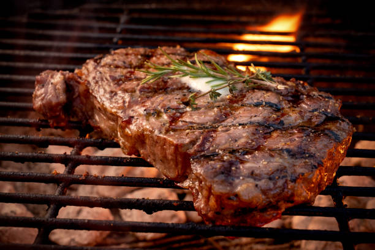

Rib-Eye Steak

Description:
A Rib Eye steak is a classical cut that is known to be tender and full of flavor.
It's rich marbling melts together with the meat while cooking giving it it's iconic flavor.
Ingredients:
- (4) 1/2 pound (oz) of Rib-eye Steak
- 1 teaspoon of garlic powder
- 1 teaspoon of onion powder
- 1/2 teaspoon of salt and peper each
- 1 and 3/4 Worcestershire sauce
- 1/3 cup brown sugar
- Vegtable oil for brushing grill
Directions:
- Season steaks with garlic powder, onion powder, salt and pepper.
- Place Worcestershire sauce and brown sugar in large resealable bag, shake and mix.
- Pour 1/2 of the marinade into another large resealable bag and place 2 steaks in each bag to coat. Refrigerate for 1 hour.
- Preheat outdoor grill to high-heat and lightly oil the grate
- Drain marinade from the bags into a small saucepan
- Boil and cook the marinade for 3-4 minutes then set aside.
- Grill Steaks on preheated grlil to preferred doneness, roughly 7 minutes per side.
- Now baste the boiled marinade in the final 5 miinutes of cook time on the steaks. (Thermometer should read 140F (60C) in the center of the steak for medium doneness)
- Enjoy!
Back to Homepage